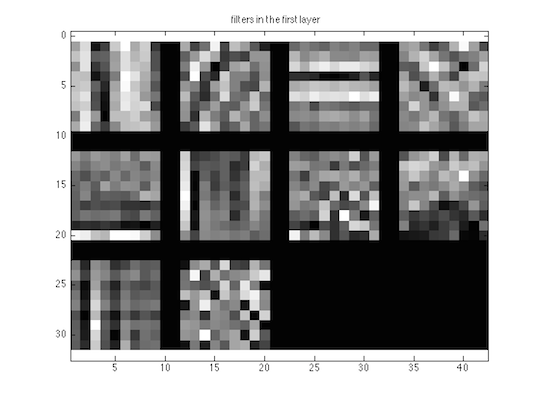
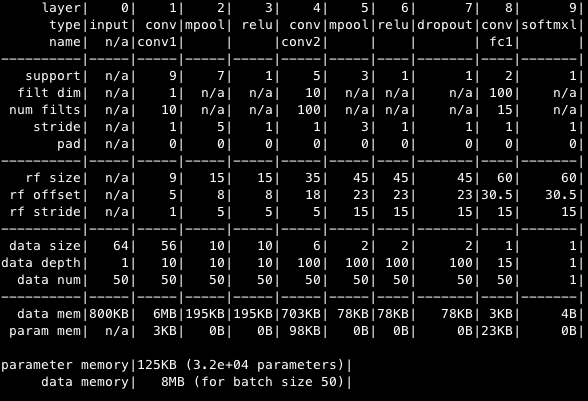
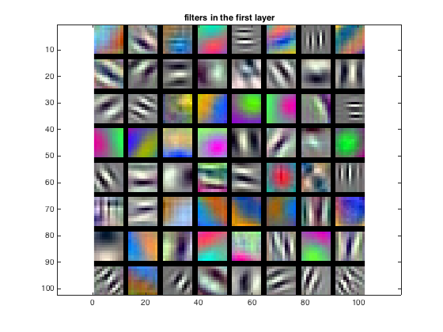
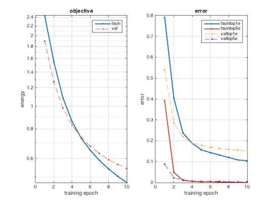

Project 6 / Deep Learning
Goal
In this project, we intend to design and train deep convolutional networks for scene recognition using the MatConvNet toolbox.
Method
To realize the goal of scene recognition and achieve higher performance compared to those in project 4, we divided the project into two parts.
In Part 1 of the project, we train a deep convolutional network from scratch to recognize scenes. For Part 2, we used the pretrained VGG-F network which was not trained to recognize scenes at all.
Part 1
The starter code gives us a very simple network architecture which doesn't work that well. In order to enhance the performance of the scene recognizer, we added and modified following parts:
-
Jittering, enhance accuracy to 29%
For the scene recognition, flipping the image left to right helps enhance the performance. Besides, rotating and cropping the image with a random degree could also be employed, however, it did not help a lot.
Essentially, jittering is synthetically increase our amount of training data during the learning process. With more training data, the network will not get over fitting easily, though part of the training data is synthesized. Obviously, synthesized data is not as good as truly independent data.
Training epoch = 50, Learning rate = 0.0001
-
Normalization, enhance accuracy to 50%
Subtracting the mean from every image, as a common and simple method which is widely used in the training a convolutional neural network, improves the performance distinctively.
Training epoch = 50, Learning rate = 0.0001

-
Regularization, enhance accuracy 53%
Drop out is a practical and efficient method of regularization when the large amount of data is not available. Basically, it randomly turns off network connections at training time to get rid of overfitting. It can be seen to split the network into many thinner sub-network. At the same time, we end up with having more training epoch.
Training epoch = 60, Learning rate = 0.0001
-
Adding more layers, enhance accuracy to 57%
To improve the performance further, a real 'deep' neural network is employed.At the same time, many more training epoch is necessary. By adding another max pooling layer, we reduce the window size of pervious pooling layer from 7 by 7 to 2 by 2, also changing the stride of that layer from 1 to 2.

Training epoch = 150, Learning rate = 0.0001, Accuracy = 57% (Best result in Part 1)
Part 2
In this part, a pre-trained deep network with fine-tuning was applied in order to improve the scene recognizer's performance to a higher level.
Since representations learned by deep convolutional networks is generalize surprisingly well to other recognition tasks, a pre-trained deep network was employed. After fine-tuning, its performance did exceed the one with hand-crafted features. Concretely, we took VGG-F network as initiation, and then replace the final layer with random weights, and train the entire network again with images and ground truth labels.
-
Before tuning the VGG-F network, it is necessary to pre-process the image sample.
-
First, the input images need to be in the size of 224 x 224 when returned by getBatch() function.
-
Secondly, jittering is still a practical method to synthesize training data.
-
Then, since VGG-F accepts 3 channel (RGB) images, concatenating grayscale images into color images with themselves before feeding them into the network is done.
-
Last but not least, all the images are zero centered by subtracting the average image which is given by the net.normalization.averageImage.
-
After loading the VGG-F network, we edit the fc8 and softmax layer by removing and specifying them again. Obviously, the parameters of network such as data depth and output data can be modified by changing the resolution of specific layer and also tuning the stride and padding with zeros.
The result is shown as below
Using modified VGG-F network without training the entire network and adding dropout layers
Training epoch = 10, Learning rate = 0.0001, Accuracy = 84%


-
Since the dropout layers were missing from the pretrained model, we also add the dropout layers. First, we try with adding dropout between fc7 and fc8.
Using modified VGG-F network and adding one dropout layer (between fc7 and fc8)
Training epoch = 30, Learning rate = 0.0001, Accuracy = 90%
-
Adding another dropout layer in between fc6 and fc7. The structure of network is shown below:
Using modified VGG-F network and adding two dropout layers (between fc7 and fc8, also, between fc6 and fc7)
Training epoch = 5, Learning rate = 0.0001, Accuracy = 84%
-
Extra Experiments: we tried to apply varied learning rate with decay, and use number of training epoch correspondingly.
The results are show below:
1, Training epoch = 13, Learning rate: decaying rate from 10 to the power of -4 to 10 to the power of -5.5, Accuracy = 87%
2, Training epoch = 12, Learning rate = 0.001, whole net was retrained, Accuracy = 88%
3, Training epoch = 12, Decayed learning rate, whole net was retrained, also adding the rotation to synthesize the training image, Accuracy = 88%
Discussion
Scene recognition is a very common and popular topic in computer vision research area. It has been developed for several decades. Researchers are trying to chase higher score to verify the performance of the scene recognition algorithm. Recently, deep learning was applied into this research topic, and it brings evolutionary improvement. Concretely speaking, the convolutional neural network, characterized by multi-layer structure, sparse connectivity, and weight sharing has already been employed in scene recognition research and achieves higher performance than ever before.
The VGG Convolutional Neural Networks is applied in this project. It has interface for writing code in Matlab, and clear visualization of the stucture of network.
After tuning the parameter of the system, we found:
-
Jittering (flip and rotation) really improves the performance of scene recognition by 10 to 15 percent
-
Dropout is necessary, since convolutional neural network is prone to be overfitted. However, having multiple dropout layers really makes the running time longer. It improves the accuracy by 10 to 15 percent.
-
Increasing the filter depth also improves the accuracy, since the each weighting parameter could be trained better. It improves the result by 10 to 15 percent
-
Trick: subtracting the "average" from each training image makes accuracy even better. This improves the accuracy by 15 percent
-
There is always tuning work after adding a new layer in the network. Different combinations, orders, and parameters make much difference in terms of the total accuracy, the speed of convergence, and the shape of the error curve. Though, one could reach similar accuracy, the proper order and fine-tuned parameters can reduce the number of training epoch which saves a lot of time.
Future Work:
-
In our project, the dataset is still small. It just includes only 100 samples per category, and 10 category in total. If we have enough training and testing time, we want to work with larger dataset wich much more samples and image categories like "places" database from MIT. With more training and testing data, we might see other potential ability or problem of CNN.
-
Though we can actually see the structure of the network by running the "cnn_init" script, it is interesting to have a more intuitive visualization of the CNN. This would not only make the CNN easy to understand, but also help manage the parameters of each layer.